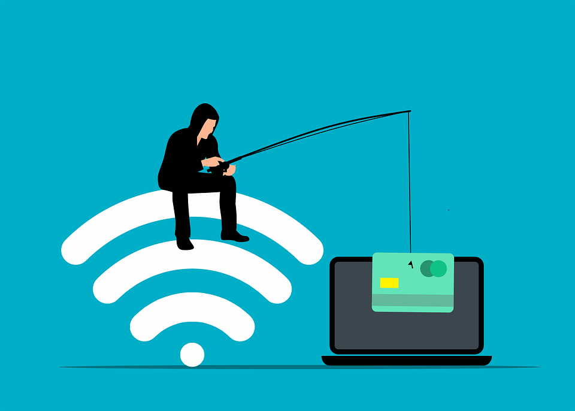

1. Phishing
Le phishing c'est quoi : L'hameçonnage ou phishing en anglais est une technique frauduleuse destinée à leurrer l'internaute pour l'inciter à communiquer des données personnelles sensibles (comptes d'accès, mots de passe…) et/ou bancaires en se faisant passer pour un tiers de confiance.
Les risques : Perte de données, vol d'identité, ou pertes financières.
Comment éviter : Ne cliquez jamais sur des liens suspects dans des emails. Vérifiez l'adresse de l'expéditeur et l'URL.
Vidéo informative : Comprendre le phishing.
2. Arnaque aux cartes bancaires
Ca consiste en quoi ? :La fraude à la carte bancaire désigne l’utilisation frauduleuse des coordonnées de la carte bancaire d’une personne à son insu alors que celle-ci est pourtant toujours en possession de sa carte. Trouver l’origine précise d’une telle fraude est souvent difficile. En effet, pour obtenir les coordonnées de la carte bancaire de la victime, le fraudeur peut utiliser de nombreuses méthodes : l’hameçonnage (phishing en anglais) à travers un message incitant la victime à fournir ses coordonnées ; le piratage d’un compte en ligne de la victime sur lequel les coordonnées de la carte seraient inscrites (commerce en ligne, réseaux sociaux…) ; le piratage d’un équipement informatique de la victime (ordinateur, téléphone…) ; l’utilisation d’une fuite de données d’un site en ligne sur lequel la victime aurait laissé les coordonnées de sa carte ; le piégeage d’un distributeur de billets ou lors d’un paiement chez un commerçant malhonnête qui aurait pu photographier la carte.
Les risques : Perte d'argent, vol de vos informations bancaires.
Comment éviter : Vérifiez la sécurité des sites (recherchez "https").
En savoir plus : Site officiel de cybermalveillance.
3. Faux rapports techniques

C'est quoi : L’arnaque au faux support technique (Tech support scam en anglais) consiste à effrayer la victime, par SMS, téléphone, chat, courriel, ou par l’apparition d’un message qui bloque son ordinateur, lui indiquant un problème technique grave et un risque de perte de ses données ou de l’usage de son équipement afin de la pousser à contacter un prétendu support technique officiel (Microsoft, Apple, Google…), pour ensuite la convaincre de payer un pseudo-dépannage informatique et/ ou à acheter des logiciels inutiles, voire nuisibles. Si la victime refuse de payer, les criminels peuvent la menacer de détruire ses fichiers ou de divulguer ses informations personnelles.
Les risques : Paiement pour un service inexistant, vol de données personnelles ou installation de logiciels malveillants.
Comment éviter : Ignorez les messages alarmants ou les appels non sollicités. Contactez directement le fabricant de votre appareil.
Vidéo explicative : Les faux supports techniques.